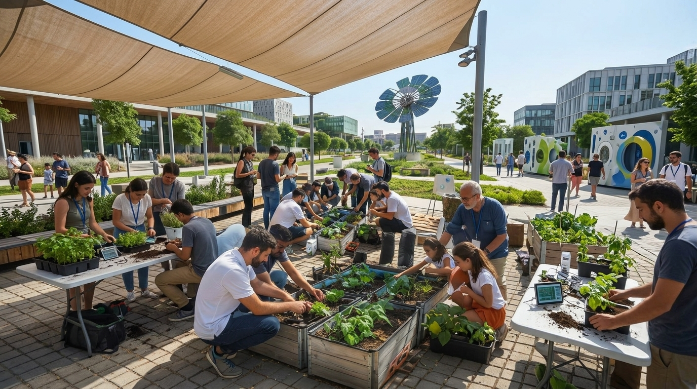

El Festival 5G presenta su nueva edición
El Festival 5G vuelve con una propuesta para descubrir cómo la conectividad transforma nuestro día a día.
Durante el evento, los asistentes podrán conocer proyectos innovadores y conversar con
sus creadores.
La tecnología será la protagonista de esta edición.
Una oportunidad para aprender, compartir ideas y mirar al futuro.
Una experiencia abierta a todas las personas curiosas.
Demostraciones y actividades para todos los públicos
El programa incluirá demostraciones interactivas y talleres para acercar la tecnología 5G
a personas de todas las edades. Los visitantes podrán participar y conocer de cerca nuevas formas de comunicación.
Aprender haciendo será una de las claves.
Cada actividad propondrá explorar una idea tecnológica de manera práctica.
No hace falta tener experiencia previa para participar.

Un festival con mirada hacia un futuro sostenible
La organización quiere que el festival sea también un espacio para reflexionar
sobre el uso responsable de la tecnología y su papel en la construcción de comunidades más conectadas.
Innovar también significa cuidar de nuestro entorno.
Por eso, las actividades invitarán a compartir ideas para un futuro mejor.
La participación de la comunidad será fundamental.